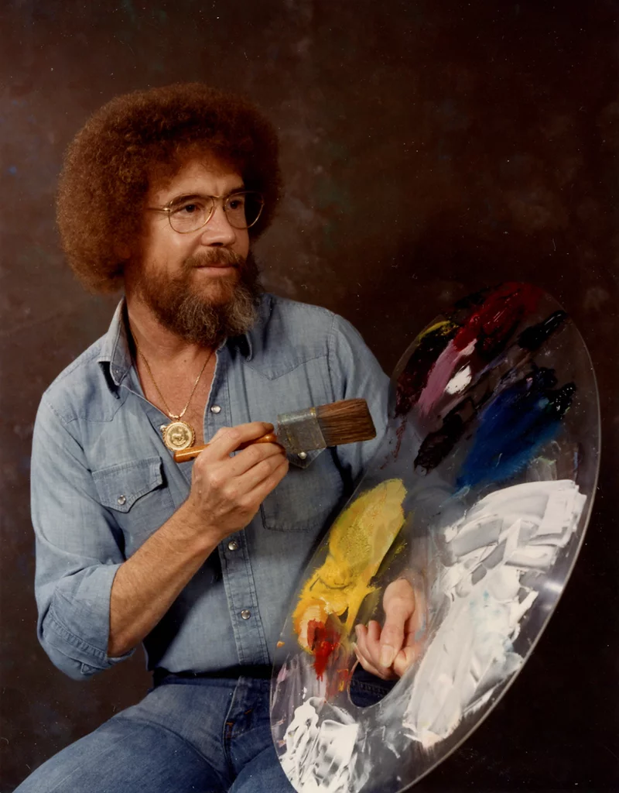
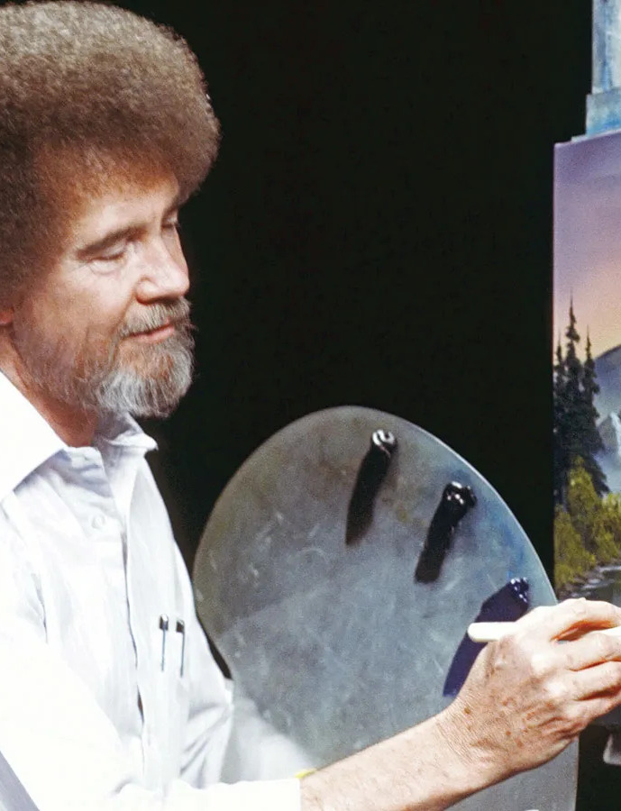

📌 幼少期と軍歴 (1942–1981)
- フロリダ州デイトナビーチで生まれる
- 18歳でアメリカ空軍に入隊し、20年間勤務
- 厳しい軍隊生活とのバランスを取るために穏やかな態度を身につける
- アラスカで絵を学び、雪景色にインスピレーションを受ける
🎨 「The Joy of Painting」時代 (1981–1995)
- ビル・アレクサンダーに師事し、ウェット・オン・ウェット技法を習得
- 1983年に「The Joy of Painting」を制作し、31シーズン続く大人気番組に！
- 「誰でも絵を描ける」と何百万人もの人々に教えた


知っていましたか？ 🌲
🎨 ボブ・ロスはテレビ番組で収益を得ていなかった！収入源は画材販売だった
🌲 生涯で30,000枚以上の絵を描いた！
🐿 動物好きで、リスをよく保護していた
1942
Born
Born
1961
Joins Air Force
Joins Air Force
1983
Show Debut
Show Debut
1995
Passed Away
Passed Away